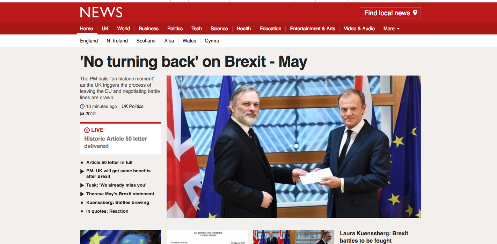
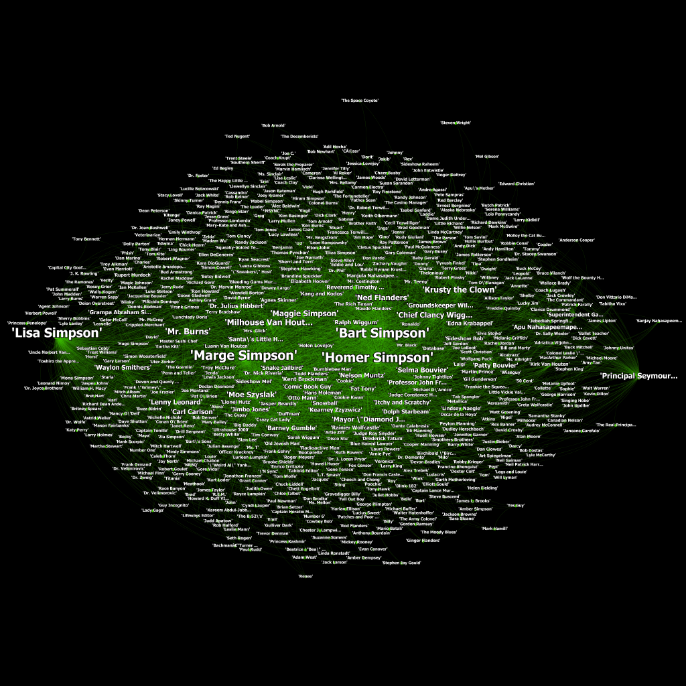
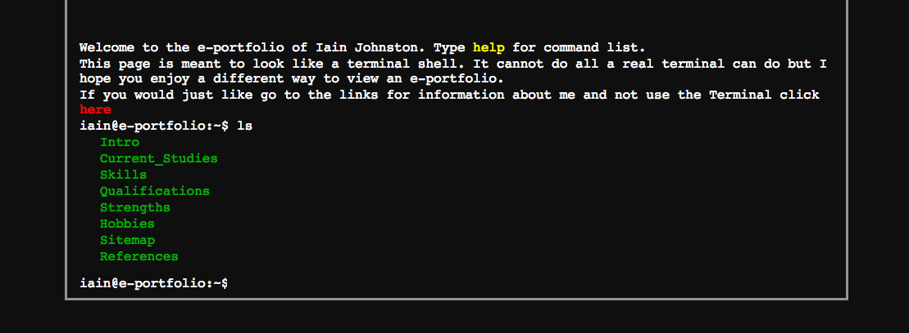

During my 3rd year of university I took a placement year and went to work for BBC News. I was a member of the team that have been working on re-building the front page among other things.
It is a project that I'm very proud to have worked on and I learnt a lot about building complex web applications.
For my Emerging Technolgies course for university, I had to undertake a network analysis. The network I chose was the characters in The Simpson. The code can be found on my Github and a copy of the full report that goes through some analysis of the network can be found here.
I made a simple portfolio with similar information to a CV that can be run similar to a terminal complete with some simple terminal commands. The main part of the site is made to look like GNU nano, a simple text editor.
The code can be found on my Github and a live demo here
